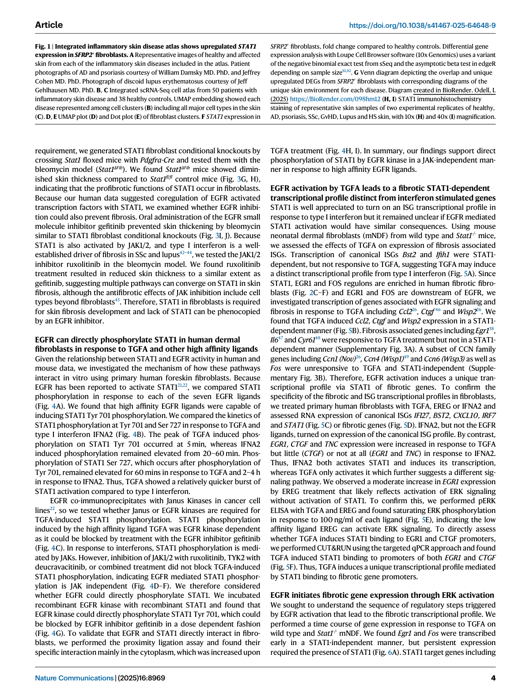
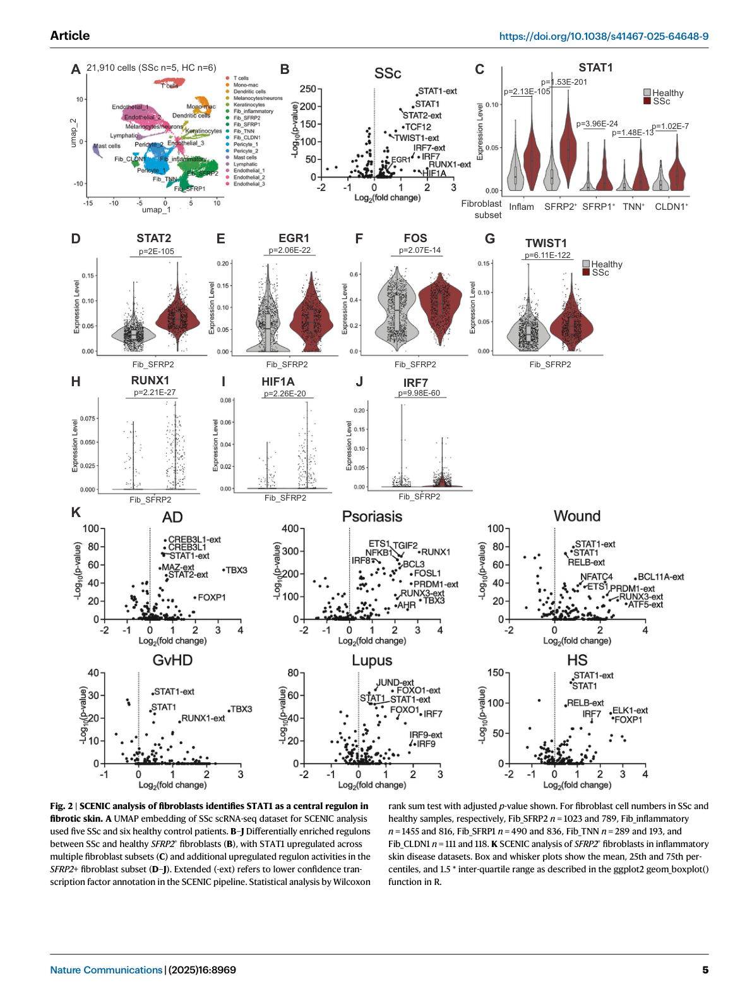
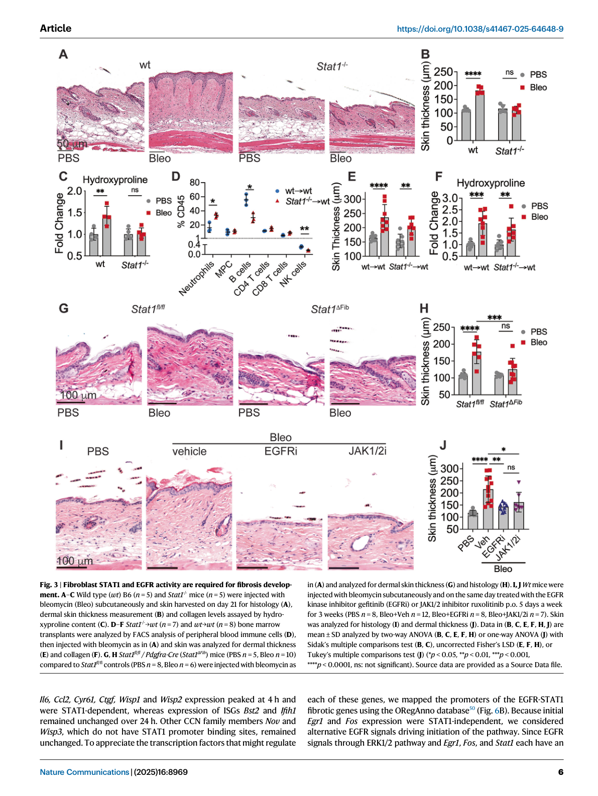
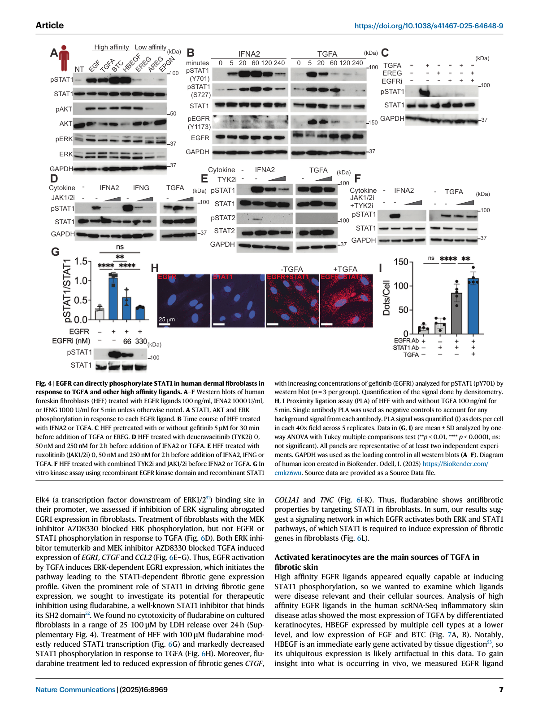
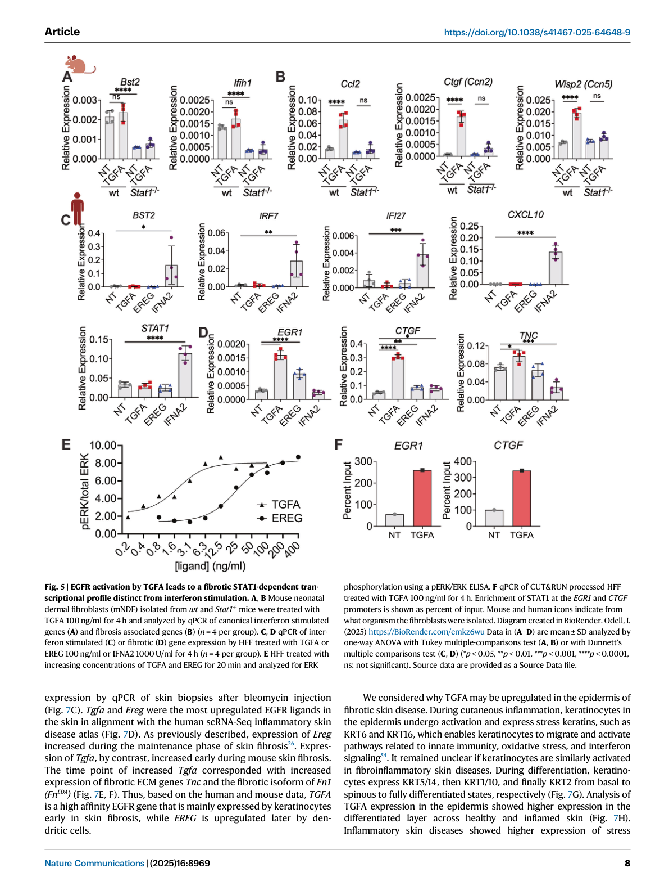
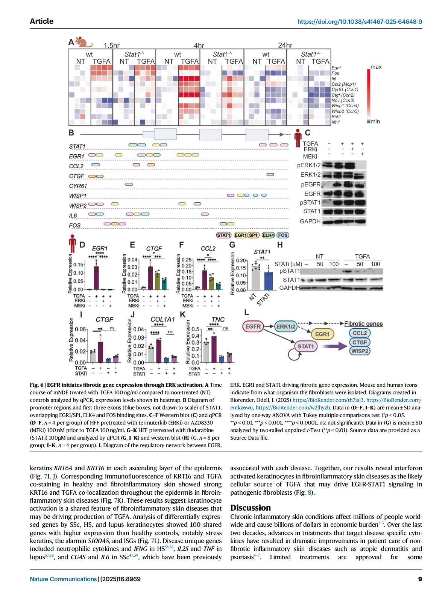
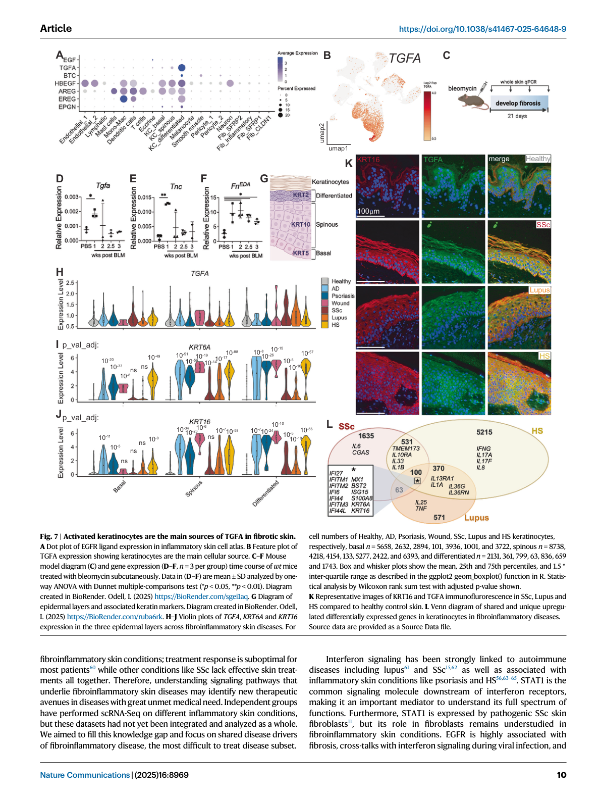
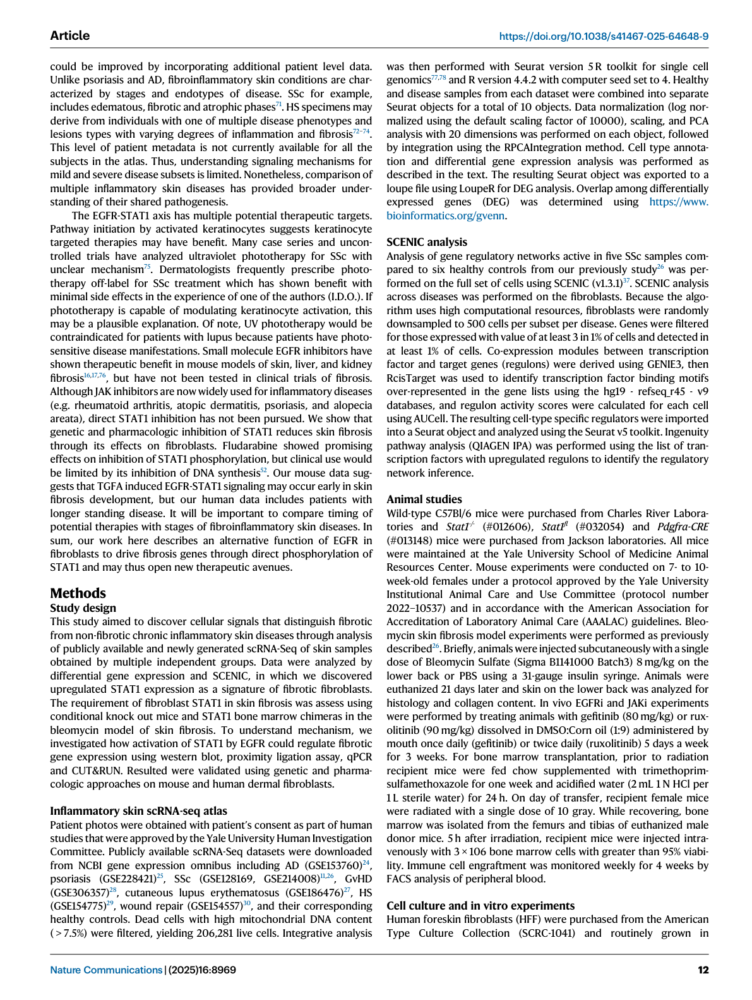
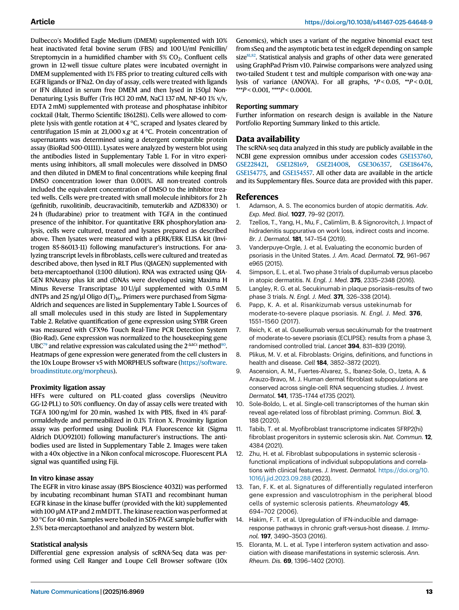

Odell et al., 2025, Nature Medicine
Abstract | 摘要#
The EGFR-STAT1 axis drives fibrosis across fibroinflammatory skin diseases including systemic sclerosis (SSc), hidradenitis suppurativa (HS), and lupus. Epidermal keratinocytes in these diseases upregulate high-affinity EGFR ligand TGFA, which directly phosphorylates STAT1 in dermal fibroblasts via EGFR, inducing a distinct pro-fibrotic transcriptional program (EGR1, FOS, CTGF, CCL2, IL6) that is independent of classical JAK-STAT/IFN signaling. ERK signaling via EGR1/FOS acts as the initiating step. TGFA is thus a keratinocyte-derived damage signal and therapeutic target; fludarabine blocks EGFR-STAT1 fibrosis in vivo.
Key Findings | 核心发现#
- EGFR-STAT1 是核心纤维化驱动轴：在硬皮病 (SSc)、化脓性汗腺炎 (HS)、红斑狼疮 (lupus) 等 fibroinflammatory 皮肤病中，EGFR-STAT1 信号是共同的纤维化驱动通路
- STAT1 是成纤维细胞的 master regulon：scRNA-seq + SCENIC 分析发现 SFRP2+ 成纤维细胞簇中 STAT1 是核心转录调控因子，而非经典的 IFN 应激通路
- EGFR 直接磷酸化 STAT1：EGFR 不通过 JAK 激酶，直接磷酸化 STAT1 (Y701)，诱导独特的纤维化转录组
- ERK-EGR1/FOS 启动通路：EGFR → ERK → EGR1/FOS 是启动步骤，随后激活 STAT1 依赖性纤维化基因
- 角质形成细胞是 TGFA 来源：活化的角质形成细胞大量表达 TGFA（高亲和力 EGFR 配体），是皮肤纤维化的上游损伤信号
- 潜在治疗靶点：Fludarabine（STAT1 磷酸化抑制剂）和 EGFR 抑制剂在体内模型中均显示抗纤维化效果
Background | 背景#
fibroinflammatory 皮肤病包括：
| 疾病 | 特征 |
|---|---|
| 系统性硬化症 (SSc) | 皮肤和内脏器官纤维化，缺乏有效皮肤治疗 |
| 化脓性汗腺炎 (HS) | 慢性炎症性皮肤结节，纤维化 |
| 红斑狼疮 (lupus) | 自身免疫性皮肤损伤 |
既往问题：
- 各疾病 scRNA-seq 数据各自独立，未整合分析
- EGFR 激活已知可促纤维化，但 EGFR 与 STAT1 的分子连接不清
- STAT1 传统上与 JAK-STAT/IFN 信号相关，其在纤维化中的非经典作用未被系统研究
Methods | 方法#
- 整合单细胞 atlas：整合 SSc (n=5) + HS (n=?) + lupus (n=?) 患者皮肤 scRNA-seq，与健康对照 (HC n=6) 比较，共 21,910 个细胞
- SCENIC 分析：转录因子 regulon 富集分析，识别 SFRP2+ 成纤维细胞中的 master regulator
- 体内小鼠模型：
- Stat1 floxed × Pdgfrα-Cre → 成纤维细胞条件性敲除 Stat1
- Bleomycin 诱导皮肤纤维化
- AZD8330 (MEK 抑制剂)、erlotinib (EGFR 抑制剂)、fludarabine (STAT1 磷酸化抑制剂) 处理
- 体外细胞实验：人皮肤成纤维细胞 (HFF)、TGFA/IFNA2 刺激
- 免疫共沉淀、磷酸化 Western blot：验证 EGFR-STAT1 直接相互作用
- TGFA 免疫荧光：患者皮肤活检 KRT16 + TGFA 共染色
Results | 主要结果#
Fig. 1 | 整合 fibroinflammatory 皮肤疾病 atlas#

- 整合 SSc + HS + lupus 三个疾病的 scRNA-seq（对比健康对照）
- 鉴定 8 种主要细胞类型（ keratinocytes, fibroblasts, T cells, myeloid cells 等）
- 成纤维细胞在疾病组织中比例改变；myofibroblasts (TAGLN+) 显著增加
- 上皮损伤特征基因（KRT6A, KRT16）在角质形成细胞中共享性上调
Fig. 1 | Integrated inflammatory skin disease atlas shows upregulated STAT1 signaling in fibroblasts
Fig. 2 | STAT1 是 SFRP2+ 成纤维细胞的核心 regulon#

- SCENIC 分析：识别 SFRP2+ 成纤维细胞 cluster 中的核心转录因子 regulon
- STAT1 regulon 活性在 SSc 中显著升高（p=2.13E-105 vs HC）
- 其他活化 TF regulons：TWIST1, FOS, EGR1, RUNX1, HIF1A, IRF7（与 EGFR 激活一致）
- Ingenuity pathway 分析：富集 collagen formation, ECM organization, EMT, wound healing pathways
- EGFR 活化 TF（FOS, EGR1）与 STAT1 regulon 共激活
Fig. 2 | SCENIC analysis of fibroblasts identifies STAT1 as a central regulon in fibrotic skin. UMAP embedding of SSc scRNA-seq (n=5 SSc, n=6 HC)
Fig. 3 | 成纤维细胞 STAT1 + EGFR 是纤维化发生的必要条件#

- Stat1 条件性敲除（Pdgfra-Cre）：完全阻止 bleomycin 诱导的皮肤纤维化（COL1A1, FN-EDA 表达下降）
- AZD8330 (MEK i) + erlotinib (EGFR i)：同样阻止纤维化
- 免疫细胞比例在 STAT1 敲除后不受影响（排除免疫间接效应）
- 证明：成纤维细胞自身的 STAT1 + EGFR 活性是纤维化发生的细胞自主性必要条件
Fig. 3 | Fibroblast STAT1 and EGFR activity are required for fibrosis development in vivo
Fig. 4 | EGFR 直接磷酸化 STAT1（非 JAK 依赖）#

- Co-IP 实验：EGFR 与 STAT1 直接相互作用
- TGFA 刺激：在 30 min 达到 STAT1 Y701 磷酸化峰值（早于 IFN 诱导的延迟 STAT1 磷酸化）
- IFN 诱导的 STAT1 磷酸化：由 JAK1/JAK2 介导，peak 在 2-6 h
- EGFR 磷酸化 STAT1 不依赖 JAK 激酶：磷酸化谱与 IFN 刺激不同
- EGFR-STAT1 诱导的纤维化基因（CTGF, CCL2, IL6, CYR61）与 IFN 诱导的 ISG（BST2, IFIH1）转录组谱显著不同
Fig. 4 | EGFR can directly phosphorylate STAT1 in human dermal fibroblasts in a JAK-independent manner
Fig. 5 | TGFA 诱导 STAT1 依赖性纤维化转录组#

- TGFA 处理 HFF：EGR1, FOS 在 1 h 内快速上调（STAT1 非依赖），随后 STAT1 依赖性纤维化基因 CTGF, CCL2, IL6, CYR61, WISP1, WISP2 在 4 h 达峰
- IFNα2 诱导 ISG（BST2, IFIH1）：在 24 h 持续升高，STAT1 依赖但 不诱导纤维化基因
- STAT1 结合位点：EGR1, FOS 启动子含 EGFR/ERK/ELK4 结合位点（不依赖 STAT1）；CTGF, CCL2 含 STAT1 结合位点
- 关键区别：TGFA-EGFR-STAT1 与 IFN-JAK-STAT1 产生功能不同的转录组
Fig. 5 | EGFR activation by TGFA leads to a fibrotic STAT1-dependent transcriptional profile distinct from IFN signaling
Fig. 6 | ERK-EGR1/FOS 启动通路#

- MEK 抑制剂 AZD8330：阻断 ERK 磷酸化后，TGFA 仍可磷酸化 EGFR 和 STAT1，但 EGR1, CTGF, CCL2 表达下降
- EGR1, FOS 启动子：含 ELK4（ERK 下游 TF）结合位点
- ERK 抑制剂（temuterkib, AZD8330）：阻断 EGR1/CTGF/CCL2 诱导，但不阻断 STAT1 磷酸化
- 通路顺序：TGFA → EGFR → ERK → ELK4 → EGR1/FOS → (启动) → STAT1 → 纤维化基因
Fig. 6 | EGFR initiates fibrotic gene expression through ERK-dependent EGR1/FOS activation (initiation step), then STAT1 drives the fibrotic gene program
Fig. 7 | 角质形成细胞是 TGFA 的主要来源#


- TGFA 免疫荧光：疾病皮肤表皮中 KRT16+ 角质形成细胞强共表达 TGFA，健康皮肤无
- KRT6A/KRT16：表皮各层均有，在 fibroinflammatory 疾病中共享性上调
- TGFA 是最早上调的 EGFR 配体：在小鼠 bleomycin 模型中，Tgfa 在纤维化早期（day 3）即上调，而 Ereg 在维持期上调
- 角质形成细胞 shared stress response：SSc + HS + lupus 角质形成细胞共有 100 个上调基因（stress keratins + 损伤信号）
- FnEDA, Tnc（纤维化 ECM marker）与 Tgfa 表达时间一致
Fig. 7 | Activated keratinocytes are the main source of TGFA in fibrotic skin. KRT16+ keratinocytes co-express TGFA in diseased skin; Tgfa upregulation early in mouse fibrosis corresponds with ECM gene expression
Fig. 8 | 机制模型#

Fig. 8 | Model: Keratinocyte-derived high-affinity EGFR ligand (TGFA) activates EGFR-STAT1 signaling in dermal fibroblasts, driving a pro-fibrotic transcriptional program. TGFA is a keratinocyte damage signal; fludarabine blocks EGFR-STAT1-driven fibrosis
Signaling Pathway Model | 信号通路模型#
角质形成细胞（损伤/应激）
↓ TGFA（高亲和力 EGFR 配体，上调）
EGFR（成纤维细胞膜）
├─→ ERK ─→ ELK4 ─→ EGR1/FOS ←── STAT1 非依赖（启动步骤）
│
└─→ (直接) STAT1 Y701 磷酸化 ←── JAK 非依赖
↓
STAT1 二聚体 → 核转位
↓
纤维化基因转录：CTGF, CCL2, IL6, CYR61, WISP1, WISP2
↓
细胞外基质沉积 → 皮肤纤维化
注意：IFN-JAK-STAT1 通路（STAT1 磷酸化由 JAK1/JAK2 介导）→ ISG 表达（BST2, IFIH1）≠ 纤维化
Therapeutic Implications | 治疗启示#
| 药物 | 靶点 | 效果 |
|---|---|---|
| Fludarabine (STAT1 磷酸化抑制剂) | STAT1 | 阻断 TGFA 诱导的纤维化基因，体内抗纤维化 |
| Erlotinib (EGFR 抑制剂) | EGFR | 阻断纤维化发展 |
| AZD8330 (MEK 抑制剂) | MEK/ERK | 阻断 EGR1/FOS 启动步骤 |
- Fludarabine 目前用于血液肿瘤（STAT1 在肿瘤免疫逃逸中的作用），有潜在皮肤纤维化治疗价值
- EGFR 抑制剂（已在肝纤维化、移植物抗宿主病中证实抗纤维化）可能对 SSc 皮肤有效
Limitations | 局限性#
- Fibroinflammatory 皮肤疾病具有阶段性和内型异质性（SSc 分为水肿期/纤维化期/萎缩期），现有 atlas 缺乏详细的患者分期 metadata
- 轻症与重症疾病亚群的信号机制差异尚不清楚
- 临床转化仍需人体试验验证
References | 核心参考文献#
- Fuchs, B. C. et al. EGFR inhibition attenuates liver fibrosis. Hepatology 59, 1577–1590 (2014)
- Morin, F. et al. EGFR inhibition prevents sclerodermatous GVHD. J Invest Dermatol 135, 2385–2393 (2015)
- Cao, S. et al. EGFR activation is essential for kidney fibrosis. Nat Commun 14, 7357 (2023)
- [Ereg 在皮肤纤维化维持期上调的既往研究]
- ORegAnno database（STAT1 promoter binding sites）
- Maul, J. T. et al. Skin disease treatment response data
- SSc 疾病分期
- 72-74. HS 疾病表型分类
Related Notes | 相关笔记#
- EGFR signaling pathway — EGFR 信号通路的经典与新兴功能
- STAT1 signaling — STAT1 在免疫与纤维化中的双重角色
- Systemic sclerosis pathogenesis — 系统性硬化症发病机制
- Fibroblast scRNA-seq — 成纤维细胞单细胞分析综述
- Hidradenitis suppurativa — 化脓性汗腺炎研究进展
文献导入时间：2026-04-14 | Zotero ItemID: 1747 | PDF: 2025_Odell_EGFR-STAT1_fibrosis.pdf